A tymczasem w Cameracie...
.
2013-05-02
Pobudka !!! śniadanie o 07.00, wyjazd o 08.00. Jesteśmy wszyscy gotowi a tu niespodzianka …panowie kierowcy nie mogą wyruszyć przed 09.00 (tachometr :)), więc co? W recepcji hotelowej jest pianino i tego nam było potrzeba :)
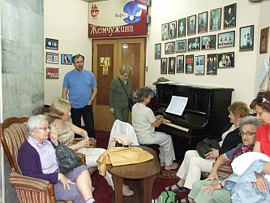 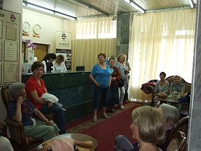
Wszyscy z przyjemnością posłuchali.
Jest 09.00, możemy ruszać, zwiedzać Odessę – „Śladami polskimi”. Pani przewodnik już jest, więc jedziemy.
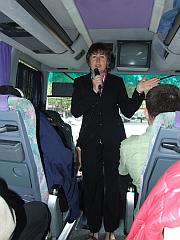 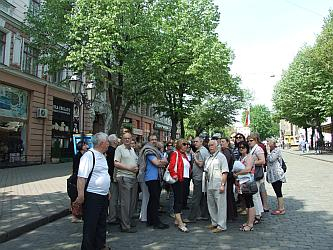 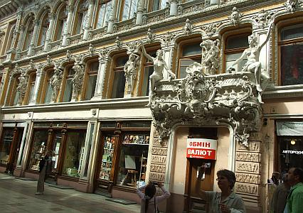
Po zwiedzaniu Odessy udajemy się do sali koncertowej na krótką próbę.
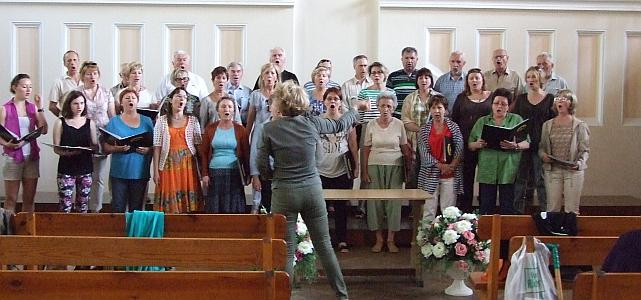
Czas szybko biegnie. Wracamy do hotelu. Trzeba odpocząć i przygotować się do koncertu.Zaczynamy koncert. Całość prowadzi słownie i dyryguje Izabela Szota, nasza pani dyrygentka.
Na koncercie są obecni: Konsul Generalny Joanna Strzelczyk z pracownikami Konsulatu,
przedstawiciele Konsulatu Generalnego ChRL w Odessie,
przedstawiciele różnych organizacji polskich, szkół i chórów.
Pierwszy utwór to „Bogurodzica” w wykonaniu samych panów.
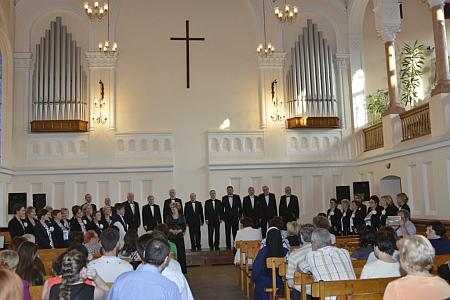
Potem dołączają panie i koncert trwa.
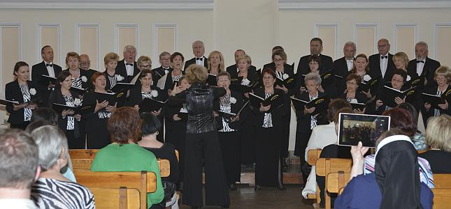
Występują również soliści: Izabela Szota (sopran), Konrad Szota (baryton) oraz Zenon Kulik (organy)
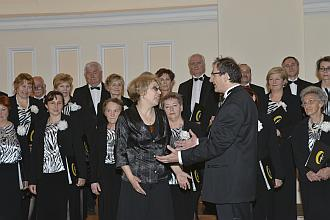 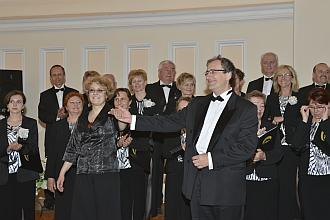
Wszystkim akompaniują pani prof. Maria Rydzewska i Zenon Kulik (nasz bas).
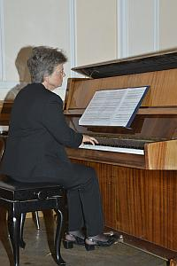 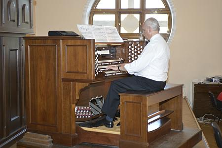
Jeszcze ukłon i . . .
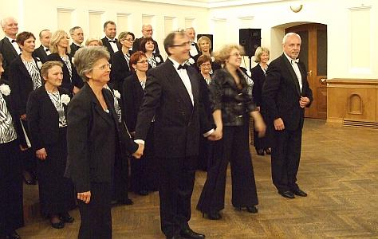
koniec koncertu. Wielkie brawa od publiczności.
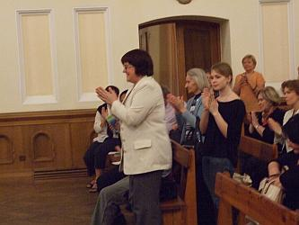 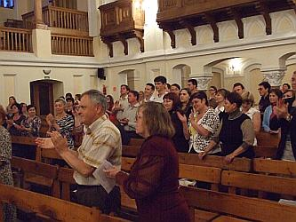
Widzowie bardzo chętnie z nami rozmawiali i zapoznawali się z naszymi materiałami reklamowymi oraz repertuarem.
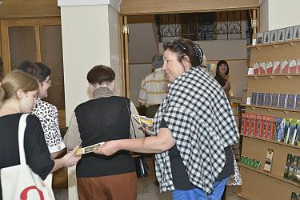
Po koncercie przebieramy się w „cywilne” ubranka i idziemy na nocny spacer po Odessie.
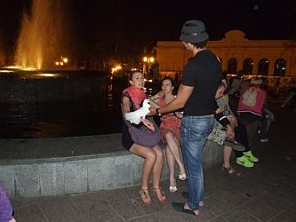 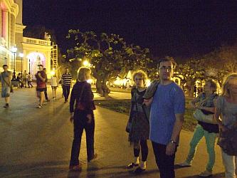

© Stowarzyszenie Muzyczne Chór Camerata Wieliczka
Projekt i wykonanie:  Prowadzenie strony: Małgorzata Wysocka-Cebula
Prowadzenie strony: Małgorzata Wysocka-Cebula